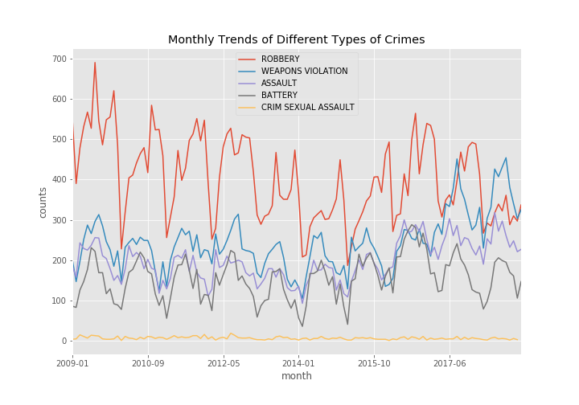
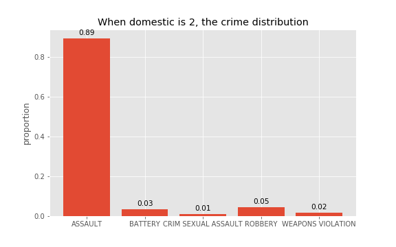

Data Analysis
Systematic Analysis of Shooting Crimes in Chicago from the 2 Major Trends: Space and TimeSpatial Trend Analysis
Clustering
The result of clustering is very different from the actual situation. The possible reason is that the data compiled does not support the method of clustering. There is no practical significance. Therefore, the method of Hotspot Analysis will be attempted.
Hotspot Analysis (Heat Map)
General Map
Map 1: Assault
Map 2: Battery
Map 3: Criminal Sexual Assault
Map 4: Robbery
Map 5: Weapons Violation
In the general heat map of the shooting case, the high-incidence areas (red part) cover almost the entire Chicago area, echoing the Chicago background mentioned, the whole Chicago city belongs to the high-risk crime city.
Comparing the maps of the five types of shooting crimes, the biggest heat area is Robbery. The least apparent heat area is the criminal sexual assault, which can just be seen a few cases within the heated area. The Robbery map has the highest density of case hotspots and the highest degree of aggregation while in the criminal sexual assault map, it is a scattered distribution of cases' cold spots, and the degree of dispersion in the case is relatively high. It is not difficult to find that the remaining three types of shooting crimes are mainly concentrated in the northwest and southeast regions, which are the high-incidence areas. Some strip or banded area near the northeast along the coastline are cold areas of the case, indicating that there are a few incidents of shooting.
Time Trend Analysis
Annual
General Trend of Shooting Crime with Percentage Distribution
Five Types of Shooting Crime Trends with Proportion distribution
In terms of the overall situation, On the whole, the shootings dropped sharply in 2012-2013, and the lowest record in the ten years of shootings in 2014. However, the good times did not last long, and it rose sharply from 2015 to 2016. In 2017, it reached a record high of ten years. Although the incidence of shooting cases eased in 2018, the proportion remains high.
As far as the five types are concerned, although there is no more significant change than the general trend, some changes have taken place. Robbery type has the largest share, and together with the three types of cases in the middle, it began to decline in 2012 but increased in the later period, similar to the general trend change mentioned above. However, the Criminal Sexual Assault has the smallest proportion and has remained almost unchanged in the past decade. Prior to 2016, the ranking of the three types of cases in the middle remained stable. However, in 2016, it is not difficult to find that Assault's growth exceeds the weapons violation, but the weapons violation jumped to the top in 2018.
Monthly

General Trend of Shooting Crime (Propotion)
An extraordinary phenomenon was found: the annual shooting rate was the lowest in February, and the proportions in July and August were both higher. It is regrettable to see, in combination with the Policy, there is no direct relationship between them. Moreover, due to the various influencing factors and the effectiveness and timeliness of legal policies, it is not straightforward to judge whether the Policy has practical effects and significance in controlling the shooting.

Five Types of Shooting Crime Trends with Proportion Distribution
With the exception of Criminal Sexual Assault, the other four types of changes are ups and downs.
Analysis of Time Series
Prediction 2019.1-3
Prediction 2019-2021
A decade of historical data is used, and the ARIMA model is applied to predict the number of future shooting cases. The forecast line represents the expected number of shooting cases per month after 2019. The grey area is the error burst. There is just a slight downward trend, but the ups and downs are still huge. This result may not be ideal.
Other Finding
Domestic-related

“Domestic Indicates whether the incident was domestic-related as defined by the Illinois Domestic Violence Act (Chicago Data Portal, 2019)”, Therefore, Assault type has the strongest correlation with this violent law.